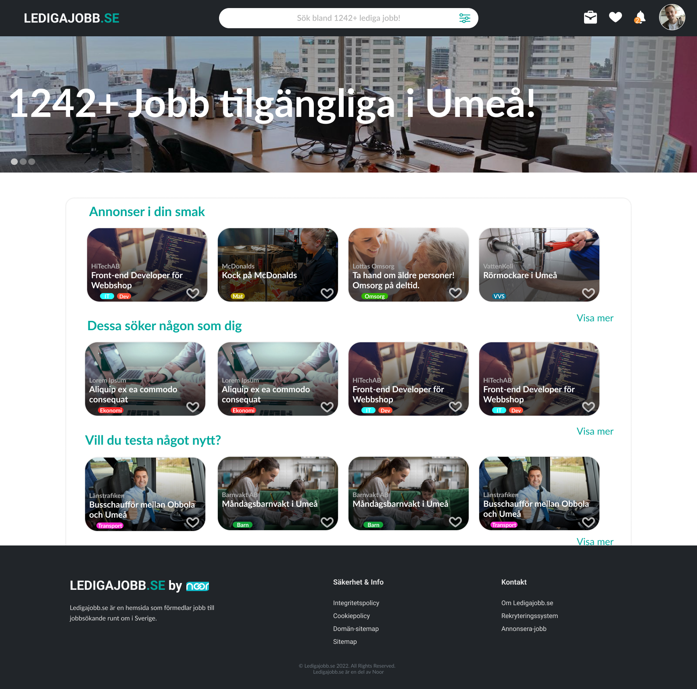
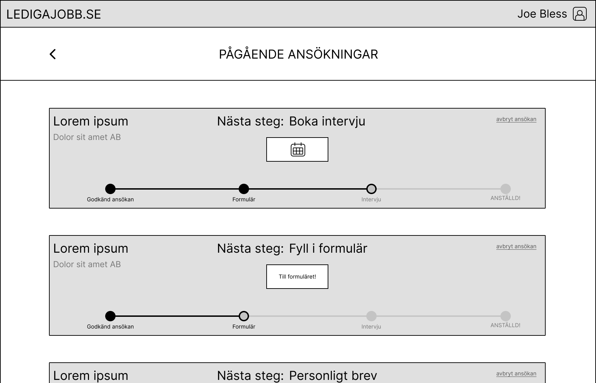
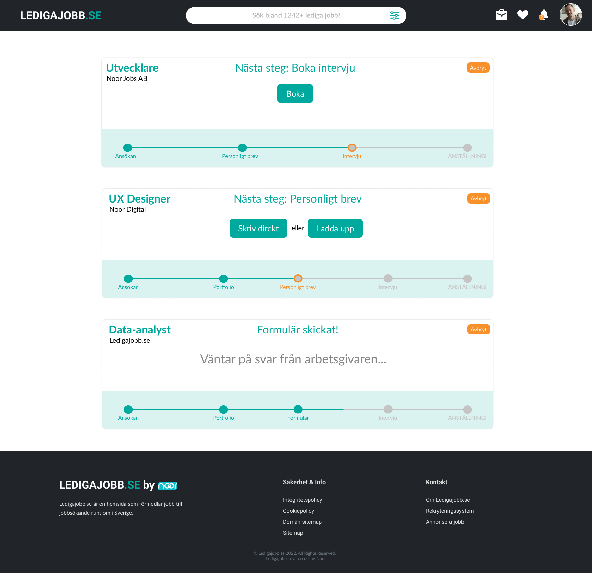

Ledigajobb.se
This project was in colaboration with the Swedish digital agency Noor Digital during the course Product Development in Media Technology using the "Design-build-test" method. The project is a re-imagination of the job application proces through the agencys web service for employment seekers Ledigajobb.se, with a goal of finding a unique niche within the employment service industry.
- Duration
- Role
- Tools
January 2022 - June 2022 (25%)
Project manager, UX-designer
Figma


The Process
In order to properly assess the needs of both employers and employees, extensive semi-structured interviews and focus groups were utilized. Through the studies, it was concluded that the main problem employers saw with using third-party employment systems was that there was no way to filter out the information they were most interested in. These points of interest also varied a lot between different employers. From the future employees' side, the biggest obstacle in the application process was observed to be doubt in whether one's credentials are enough for a certain position and anxiety caused by uncertainty in the application process.
Lo-fi prototyping and end user tests were then untilized to test out various solutions. Among the potential solutions, a system using tags to better personalize the job offers shown to those looking for employment, along with a way for employers to lay out a personalized roadmap of their employment process were the most appreciated by the target market groups.
The Result
The project resulted in a hi-fi prototype of the new service, where the functionality of browsing new job openings, as well as applying for and managing current applications, was showcased. Among the new functionalities included, the dashboard showing at which stage in the employment process a user is in for all of their current applications was the most widely praised. The resulting insights from the project were highly appreciated by Noor Digital and multiple new functionalities from the prototype have been incorporated to the current version of Ledigajobb.se.
You can visit the site here:
https://ledigajobb.se/
